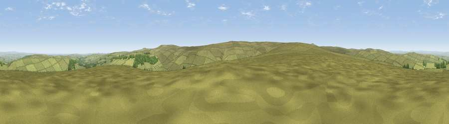

Viewpoint near Blanchland
#10508 in England · top 25% of its area beats it · near BlanchlandThe view, rendered

A 360° render of this exact spot computed from the terrain model, tree cover and land cover — summer colours, afternoon light, calibrated against photographs of famous viewpoints. Real trees, hedges and buildings will differ in detail.
The panorama
Grey silhouette: terrain skyline in each direction (720 bearings, Earth curvature and refraction included). Dashed green: skyline with trees (+15 m) and buildings (+8 m) as obstacles. Blue strip: how far the ground is visible on each bearing.
Where the view opens
Wedge length = distance to the farthest visible ground on that bearing (vegetation-aware). Rings at 10, 25 and 50 km.
What fills the view
94% grassland · 5% woodland ·
Angular shares of the visible panorama (visual magnitude), not map area. Landscape diversity 0.11 (0–1 Shannon).
Key numbers
More beautiful places nearby
The staircase of upgrades: each row has a higher view potential than everything closer. Driving times are estimates from straight-line distance, calibrated against real road routing — check an actual route before setting out.
| Place | Direction | Drive | Score |
|---|---|---|---|
| Dry Rigg | S · 3 km | ~8 min | 65.2 |
| Viewpoint near Rookhope | SE · 4 km | ~10 min | 70.4 |
| Viewpoint near Allenheads | WSW · 10 km | ~20 min | 74.6 |
| Pontop Pike | ENE · 24 km | ~39 min | 77.8 |
| Little Dun Fell | SW · 26 km | ~42 min | 78.4 |
| Cross Fell | WSW · 27 km | ~43 min | 78.7 |
| Viewpoint near Cumrew | W · 36 km | ~54 min | 78.8 |
| Barrock Fell | W · 45 km | ~65 min | 81.1 |
54.82879, -2.13189 · source: screening · position refined by local search. Computed location — check access rights before visiting.